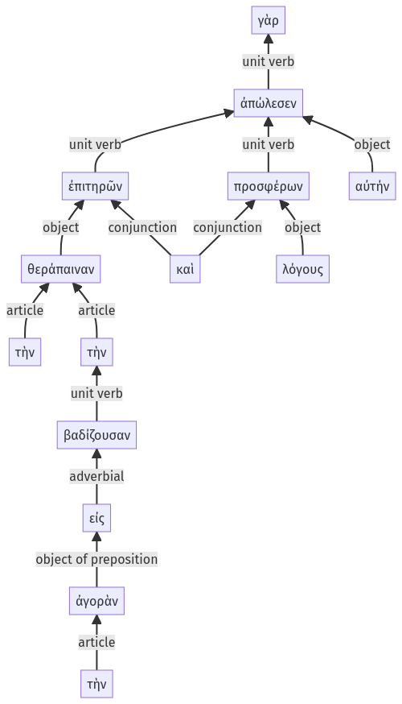

Lysias, 1.8.16-1.8.29a
1.8.1-1.8.15a | 1.9.1-1.9.28a
Sentence 16
1.8.16-1.8.29a
ἐπιτηρῶν γὰρ τὴν θεράπαιναν τὴν εἰς τὴν ἀγορὰν βαδίζουσαν καὶ λόγους προσφέρων ἀπώλεσεν αὐτήν.
2 ἐπιτηρῶν τὴν θεράπαιναν
3 τὴν εἰς τὴν ἀγορὰν βαδίζουσαν
2 καὶ λόγους προσφέρων
1 ἀπώλεσεν αὐτήν
ἐπιτηρῶν γὰρ τὴν θεράπαιναν τὴν εἰς τὴν ἀγορὰν βαδίζουσαν καὶ λόγους προσφέρων ἀπώλεσεν αὐτήν.
Highlighting:
- connecting words
- unit verb
- subject
- object
Color code:
- independent clause (level 1, transitive verb)
- circumstantial participle (level 2, transitive verb)
- circumstantial participle (level 2, transitive verb)
- attributive participle (level 3, transitive verb)
